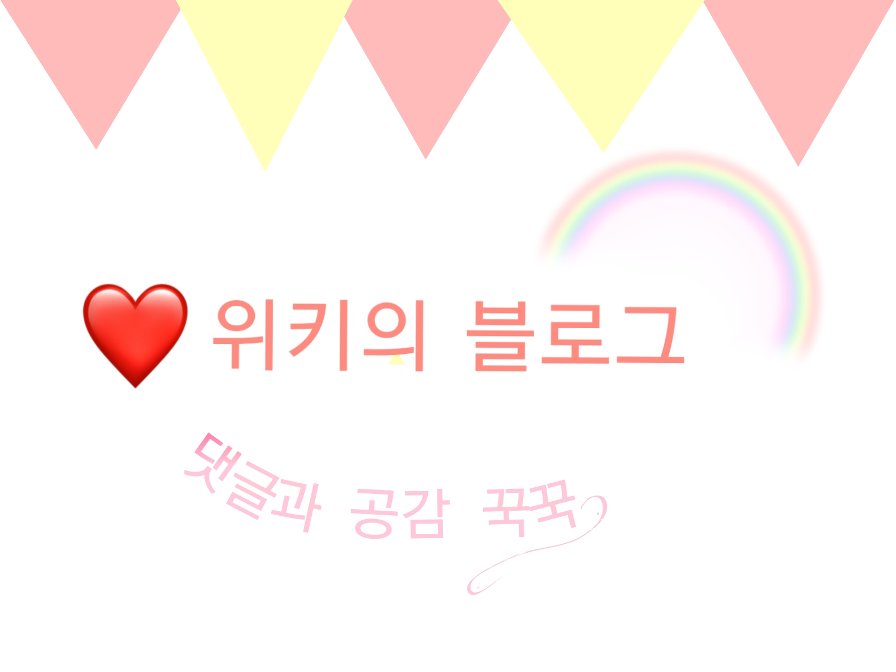

훈녀생정은 ‘훈녀생활정보’의 줄임말이다. 2010년대 네이버 블로그 등을 통해 10대 사이에 크게 유행했다. 새학기 필수품, 수련회/수학여행 코디와 메이크업, 친구 사귀기 등 대부분 학교생활과 관련된 내용이 많았다.
훈녀생정/새학기친구사귀기/인기많아지는법/친구사귀는법
훈녀생정/새학기친구사귀기/인기많아지는법/친구사귀는법
훈녀생정/새학기친구사귀기/인기많아지는법/친구사귀는법
2. 글을 꾸미기 위해 구분선, 리본 등을 붙여넣는다.
3. 준비물 관련 글인 경우는 빗, 필통, 담요 등을, 코디 관련 글일 경우 해당하는 옷들을 네이버에 검색해서 퍼온다. 원본이 아니기에 화질이 흐린 것이 포인트.
4. 마지막에 픽스아트 등으로 만든 네임카드를 이용한다.
|  |
| 네임카드의 예시. |
10대 여학생 블로그계를 주름잡았던 유행 중 하나이다. 대부분이 미용을 위한 다이어트, 화장품, 꾸미기에 관한 내용이었기에 당시 학생들 사이에서 코르셋이 동경의 대상이자 자연스러운 문화로 자리잡았다는 것을 보여준다.